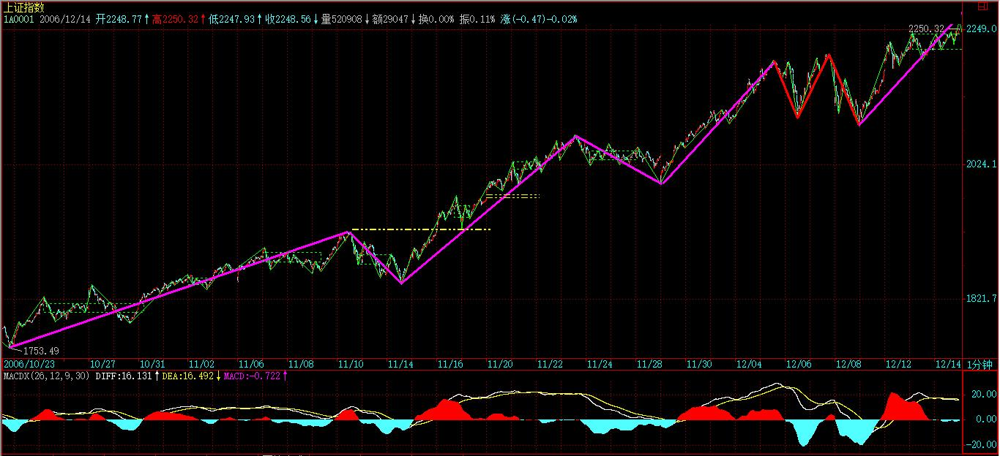
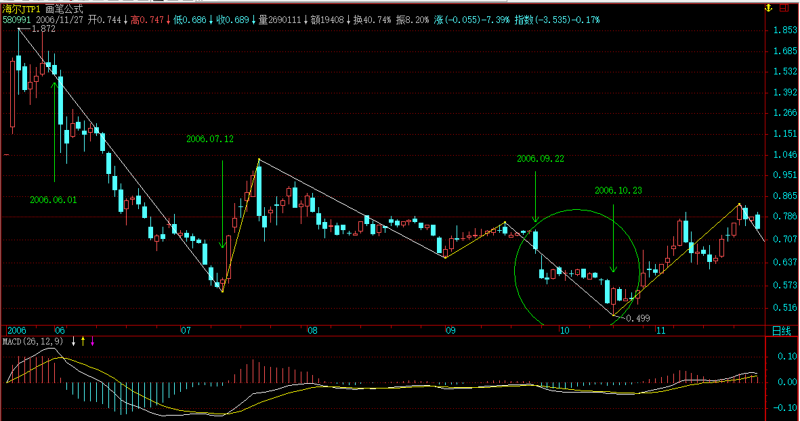

(2006-12-14 12:06:47)
上章说过，市场任何品种任何周期下的走势图，都可以分解成上涨、下跌、盘整三种基本情况的组合。【韶山映山红】这时候还没有讲递归和升级，级别只是用某周期Ｋ线图来表示，所以讲的内容都是同级别的情况。和后面的同级别分解不同，这时候的趋势是通道式的走势，盘整是收敛或扩散两种震荡走势。】
上涨、下跌构成趋势，【韶山映山红】根据上15课对上涨的定义，倾斜形状的中枢结构也可以是上涨、下跌。那么，这里说“构成”，意思是趋势包括上涨和下跌两种？还是说趋势是“上涨+上涨”或者“下跌+下跌”？★以后研究。】如何判断趋势与盘整，是判断走势的核心问题。【韶山映山红】前面课程说过，是趋势还是盘整，一眼就能看出来。所以这里说的“判断”，是分析趋势与盘整的状态，判断他们的生住坏灭。】
一个最基本的问题就是，走势是分级别的，【韶山映山红】这个时候的级别还只是图形的级别，还没有区分走势的级别。所以严格地说，这个同级别和后面的同级别分解还有一定的区别。★】在30分钟上的上涨，可能在日线图上只是盘整的一段甚至是下跌中的反弹，所以抛开级别前提而谈论趋势与盘整是毫无意义的，这必须切实把握。【韶山映山红】很多人习惯看日线图，说涨跌也是指日线图上的价格变化的涨跌。缠论分析走势类型的时候，大级别图只是粗略的查看，真正的分析需要从最小级别开始做递归。这样一来，日线图上的一笔，实际的级别有可能是30分钟级别的走势，也可能是5分钟级别的走势、1分钟级别的走势，甚至可能是1分钟线段、笔的走势。精细分析才能看到更多的本质，缠论如此，世界亦如此。这是规律。】
注意，下面以及前面的讨论，如没有特别声明，都是在同级别的层面上展开的，【韶山映山红】这时候还没有讲递归和升级，所以讲的内容都是同级别的情况。这个同级别主要是Ｋ线图周期的级别。】只有把同级别的事情弄明白了，才可以把不同级别走势组合在一切研究，这是后面的事情了。【韶山映山红】低级别走势终究会生长为高级别走势，高级别走势会影响低级别走势的走向，“把不同级别走势组合在一切研究”，多级别联立，才是面对自然生长的分析。】
【韶山映山红】这里讲的同级别，应该是说同一个Ｋ线图上看到的形态。没有中枢递归定义之前，没有级别的递归。】
上涨、下跌、盘整三种基本走势，有六种组合可能代表着三类不同的走势：【韶山映山红】如何做同级别走势类型组合的完全分类？第一个维度走势是否反向。第二个维度是否有震荡盘整。两个维度的完全分类有4种：】
【韶山映山红】趋势+趋势还是趋势，不算组合，所以得到三种完全分类的组合。】
陷阱式：上涨+下跌；下跌+上涨。【韶山映山红】这两种走势的下跌没有一个底部吸筹的过程，下跌看上去只是为了做局，所以叫做陷阱。这种Ｖ型反转总是能够归结为大级别中枢形成后的小级别反转。】
反转式：上涨+盘整+下跌；下跌+盘整+上涨。【韶山映山红】前面说了，这些是“在同级别的层面上”，所以盘整是走势的停顿，原趋势力量在盘整中被衰竭，然后就反向。这时候还没有强调趋势和盘整在级别上的区别。也就是说，这种转折属于无背驰段的中枢转折的情况。】
中继式：上涨+盘整+上涨；下跌+盘整+下跌。【韶山映山红】原趋势不变，盘整只是中继。为什么会有一个中继？清除异己消除隐患？试探反向力量？★可以做个专题，以后研究。】
市场的走势，都可能通过这三类走势得以分解和研究。【韶山映山红】“这三类走势”是指陷阱式、反转式和中继式的三类组合。由于三类组合属于完全分类，所以也是最基本结构元素。市场的走势都可以拆解为这三种元素。这时候的盘整还不强调是更大级别的中枢。】
站在多头的角度，首先要考虑的是买入，因此，上面六种最基本走势中，有买入价值的是：下跌+上涨、下跌+盘整+上涨、上涨+盘整+上涨三种。没有买入价值的是：上涨+下跌；上涨+盘整+下跌；下跌+盘整+下跌。【韶山映山红】所谓有买入价值，是说该组合的走势中可以找到可靠、可定义的买点。】
由此不难发现，如果在一个下跌走势中买入，其后只会遇到一种没买入价值的走势，就是下跌+盘整+下跌，这比在上涨时买入要少一种情况。【韶山映山红】所谓在下跌走势中买入，是下跌走势中准备买入，下跌走势背驰的时候执行买入，买点之前的走势是下跌。】
而在下跌时买入，唯一需要躲避的风险有两个：一、该段跌势未尽；【韶山映山红】下跌的这一段自己没有结束。实际上是被扔掉的第四种趋势＋趋势。】二、该段跌势虽尽，但盘整后出现下一轮跌势。【韶山映山红】下跌＋盘整＋下跌。下跌的这一段自己结束了，经过盘整，又开始了新的下跌。】
在上一章“没有趋势没有背驰”中，对下跌走势用背驰来找第一类买点，就是要避开上面的第一个风险。【韶山映山红】通过背驰确认该段跌势已尽，也就是说，下跌的力量衰竭的所有表现的集合就是背驰。所以形态或者技术指标不是核心，走势衰竭才是核心。】下跌背驰可以证明该段跌势已尽，但不能避开“盘整后出现下一轮跌势”。】
而当买入后，将面对的是第二个风险，如何避开？【韶山映山红】买入的依据是跌势衰竭，跌势衰竭为涨势启动准备了条件，但两者并没有一一对应的因果关系，所以这时候的买入属于左侧交易，用右侧确认做风险防护，也就是13课所说的套。】就是其后一旦出现盘整走势，必须先减仓退出。【韶山映山红】出现盘整，就变成了“下跌+盘整+下跌+盘整”，意味着不是“下跌+上涨”了，等盘整之后有“下跌+盘整+上涨”和“下跌+盘整+下跌”两种可能。减仓是为了避险。这里说的“盘整”是什么样子？如何判断“出现盘整”？在什么形态位置减仓？★以后研究。】麻烦在于，本课说的盘整和趋势是同级别。】
为什么不全部退出，因为盘整后出现的结果有两种：上涨、下跌，【韶山映山红】这半句讲“不全部退出”的留一手的原因。】一旦出现下跌就意味着亏损，而且盘整也会耗费时间，对于中小资金来说，完全没必要。【韶山映山红】这半句讲“不全部退出”的退出的原因。后面的内容其实讲的是全身而退。★】
这里有一个很重要的问题留待后面分析，就是如何判断盘整后是上涨还是下跌，如果把握了这个技巧，就可以根据该判断来决定是减仓退出还是利用盘整动态建仓了。 【韶山映山红】这个技巧是什么？应该没有作为一个问题去单独回答。散落在原文各处的有一点点。所以每个人都会看见自己理解的答案。 可能动态建仓的，只能是底部盘整。而减仓就牵涉到顶部盘整，还有中继盘整，包括向上的中继和向下的中继。向下的中继应该是特指筑底失败的情况。 一般盘整之后看涨还是跌，都是等第三类买卖点，看谁先出。显然，这里说的判断技巧要更早一些。也就是说，要在二买和类二买之类的地方做判断。 55课的买卖不同构是一个重点。108课的顶底构筑是另一个重点。 可以做个专题。以后研究。】
这是一个大问题，特别对于不想坐庄的大资金来说，这是一个最重要的问题，因为不想坐庄的大资金的安全建仓在六种走势中只可能在下跌+盘整+上涨这一种，其他都不适用。【韶山映山红】大资金利用盘整建仓，所以会有横有多长竖有多高的说法。】至于坐庄的建仓方法，和这些都不同，如有兴趣，本ID以后也可以说的。【韶山映山红】没有专门讲。散落在原文各处的有一点点。】
【韶山映山红】散户的动态建仓的方法。 不做庄的大资金的安全建仓方法。 坐庄的建仓方法。 可以做个专题。以后研究。】
根据上面的分析，可以马上设计一种行之有效的买卖入方法：在第一类买点买入后，一旦出现盘整走势，无论后面如何，都马上退出。【韶山映山红】这里说“无论后面如何，都马上退出。”不说“减仓退出”了。退出是态度和原则，减仓是手段和方法。】
这种买卖方法的实质，就是在六种最基本的走势中，只参与唯一的一种：下跌+上涨。【韶山映山红】实际上是只参与转折中最可预知的一段的超短线操作。】对于资金量不大的，这是最有效的一种买卖方法。【韶山映山红】这里说的“有效”不是有效、无效的意思，而是高效、低效的意思。】
下面重点分析：【韶山映山红】这里的分析是如何判断下跌走势衰竭的转折点。】
对于下跌+上涨来说，连接下跌前面的可能走势只会有两种：上涨和盘整。【韶山映山红】上涨+下跌+上涨，盘整+下跌+上涨。】
如果是上涨+下跌+上涨，那意味着这种走势在上一级别的图形中是一个盘整，因此这种走势可以归纳在盘整的操作中，这在以后对盘整的专门分析里研究。【韶山映山红】这里说的“上一级别”是走势类型的级别，如果是Ｋ线图的更高一级的图上去看，不一定是个盘整。“上涨+下跌+上涨”有两种情况：三段重叠、三段不重叠。这里说的盘整是指三段重叠的情况。三段不重叠的情况在高级别只是单边下跌的一段，比如后面课程里a+A+b+B+c趋势的包含三卖点的c段。也就是说，这种高效操作法需要先看这个下跌在大级别里是什么，然后再看本级别的背驰。】
换言之，对于只操作“下跌+上涨”买卖的，“上涨+下跌+上涨”走势不考虑，也就是说，当你希望用“下跌+上涨”买卖方法介入一只出现第一类买点的股票，如果其前面的走势是“上涨+下跌”，则不考虑。【韶山映山红】高级别的盘整不做，只做高级别的趋势。也就是说，在高级别趋势的背驰段寻找本级别的背驰点。后面课程讲到，趋势背驰真正能保证的只是次级别的反弹段。】真正不做的原因是，如果其前面的走势是“上涨+下跌”，在大级别的盘整里面，后面不一定是“上涨”，还有可能是盘整。】
注意，不考虑不意味着这种情况没有赢利可能，而只是这种情况可以归到盘整类型的操作中，但“下跌+上涨”买卖方法是拒绝参与盘整的。【韶山映山红】“盘整类型的操作”属于相对长线的操作类型。这里说的“下跌+上涨”买卖方法是短线操作类型。两种操作风格类型。】
如此一来，按该种方法，可选择的股票又少了，只剩下这样一种情况，就是“盘整+下跌+上涨”。【韶山映山红】两两组合的基本分类的“下跌＋上涨”，在三三组合的情况下，进一步明确只做“盘整+下跌+上涨”。】
从上面的分析可以很清楚地看到，对于“下跌+上涨”买卖方法方法来说，必须是这样一种情况：就是一个前面是“盘整+下跌”型的走势后出现第一类买点。【韶山映山红】这个一买点是“下跌”这一段走势自己的一买点。】
显然，这个下跌是跌破前面盘整的，否则就不会构成“盘整+下跌”型，只会仍是盘整。【韶山映山红】什么样情况的算是“跌破前面盘整的”“跌破”？★这里没有明确，初步可以认定是a+A+b的离开段b创新低。后面课程更多的强调是出现三卖点之后的b段下跌。】
那么在该盘整前的走势，也只有两种：上涨、下跌。【韶山映山红】两两组合的基本分类的“下跌＋上涨”，在三三组合的情况下，进一步明确只做“盘整+下跌+上涨”。然后继续向前推演到四四组合。】
对于“上涨+盘整+下跌”的，也实质上构成高一级别的盘整，因此对于“下跌+上涨”买卖方法方法来说也不能参与这种情况，【韶山映山红】这里“上涨+盘整+下跌”的三段走势是同一个级别的，站在高级别的角度看，“实质上构成高一级别的盘整”，还是一个盘整中枢的结构，只不过进入段、离开段都在中枢的下面。】
因此也就是只剩下这样一种情况：“下跌+盘整+下跌”。【韶山映山红】这里的“下跌+盘整+下跌”的三段走势是同一个级别的，如果允许扩展升级，就是高级别的a+A结构，离开段盘整背驰必回中枢的结构。】
综上所述，对于“下跌+上涨”买卖方法方法来说，对股票的选择就只有一种情况，就是：出现第一类买点且之前走势是“下跌+盘整+下跌”类型。【韶山映山红】中枢离开段有a+A盘整背驰，离开段是趋势下跌，内部本级别背驰，出现第一类买点。】
因此这里就得到了用“下跌+上涨”买卖方法方法选择买入品种的标准程序：【韶山映山红】这种操作法属于寻找机会做短线的方法，所以是“选择买入品种”。】
一、首先只选择出现“下跌+盘整+下跌”走势的。【韶山映山红】前世今生的选股：a+A结构，向下离开段是趋势。】
二、在该走势的第二段下跌出现第一类买点时介入。【韶山映山红】当下的选时：离开段内部本级别趋势背驰。】
三、介入后，一旦出现盘整走势，坚决退出。【韶山映山红】安全套：（a+A+b）要走成更大的下跌趋势（a+A+b+B），就“坚决退出”，而不是前面说的减仓退出。这时候还没有盘整背驰的概念，所以这里没有讲a、b之间的盘整背驰的关系，埋下了隐患，只能靠安全套保命。】
注意，这个退出肯定不会亏钱的，因为可以利用低一级别的第一类卖点退出，是肯定要赢利的。【韶山映山红】这段话不是安慰我们“这个退出肯定不会亏钱的”，而是告诉我们在什么情况下就触发退出动作。（a+A+b）中枢盘整背驰，b内部的一买介入后，要密切关注反弹的次级别B1的背驰。如果反弹还没有回到上面中枢就出现了次级别B1的背驰，意味着将出现A的三卖，至少a+A+b将走成a+A+b+B，就要及时在B1的背驰点退出。这个盈利就是B1段的起止点的价差。】
但为什么要退出，因为它不符合“下跌+上涨”买卖不参与盘整的标准，盘整的坏处是浪费时间，而且盘整后存在一半的可能是下跌，对于中小资金来说，根本没必要参与。【韶山映山红】这里是站在“下跌+上涨”买卖方法的角度看问题。如果不是这种操作策略，就要学会判断盘整后的走势，同时学会利用盘整做短差。】
一定要记住，操作一定要按标准来，这样才是最有效率的。【韶山映山红】缠论的操作就是一种机械操作法。先学会分析、判断，然后学会守纪律。】
如果买入后不出现盘整，那就要彻底恭喜你了，因为这股票将至少回升到“下跌+盘整+下跌”的盘整区域，【韶山映山红】a+A+b结构，b内部趋势背驰后有两种情况：本级别反趋势、更大级别中枢。29课讲的三类情况，在这里只简化成这两类，因为只做b的同级别反趋势，其他几种情况都是大级别盘整，不属于这个操作法的范畴。】如果在日线或周线上出现这种走势，进而发展成为大黑马的可能是相当大的。【韶山映山红】同样的走势形态，大级别更有前景。】
举一个例子：
驰宏锌锗：【韶山映山红】600497驰宏锌锗。】
日线上，2004年6月2日到2004年9月10日，构成下跌走势；
2004年9月10日到2005年3月14日，构成盘整走势；
2005年3月14日到2005年7月27日，构成下跌走势。
【韶山映山红】从MACD辅助判断的角度看这三段走势，下跌对应着黄白线在0轴下运行，盘整则对应着两次向0轴上的反弹，第一次反弹结束了前面的下跌，但是没有形成上涨走势，盘下之后再一次反弹，力度比第一次反弹要弱，所以反弹结束后，就开始了第二段下跌。】
也就是说，从2004年6月2日到2005年7月27日，构成标准的“下跌+盘整+下跌”的走势，【韶山映山红】这一段走势，从分析的角度看，是标准的。从直观的外形看，并不标准，引起了很多的纠结。随着缠论的进化，后面的课程使用了更深入的分析方法，这些早期的课程及其案例不必过于纠结。】而在相应的2005年3月14日到2005年7月27日的第二次下跌走势中，7月27日出现明显的第一类买点，这就完美地构成了“下跌+上涨”买卖方法的标准买入信号。【韶山映山红】两个中枢的a+A+b+B+c下跌趋势，b新低，MACD柱子面积比a小，但黄白线新低了。c新低，而MACD柱子面积小、黄白线没有新低。】
其后走势，很快就回到2004年9月10日到2005年3月14日的盘整区间，【韶山映山红】这个回到不是下跌a+A+b+B+c趋势背驰的第一个小反弹的触及盘整B中枢的DD，而是说2005.07.27-2005.10.25一段，完全回到了“下跌＋盘整＋下跌”的高级别盘整中枢区间内。】
然后回调在2005年12月8日出现标准的第二类买点，其后走势就不用多说了。【韶山映山红】二买的位置在盘整区间范围内，其后的走势力度很大。】
该种方法反过来就是选择卖点的好方法了，也就是说前面出现“上涨+盘整+上涨”走势的，一旦第二段升势出现第一类卖点，一定要走，因为后面很可能就是“上涨+下跌”的典型走势。【韶山映山红】如果不是做空，对做多的中小资金，说这种方法是选择卖点的好方法，感觉怪怪的。总觉得买点是选择的，没有买点就持币观望，不见兔子不撒鹰，有钱总是好的。卖点不是选择，是遇到这样的情况就要坚决马上退出，这种退出不只是操作上的退出，而是选股层面的退出，这样的股票在这个级别上已经是精尽人亡了。】
对此，也举一个例子：北辰实业，【韶山映山红】601588北辰实业。】
在30分钟图上，11月7日10点30分到11月22日10点，构成上涨；11月22日10点到11月30日11点构成盘整；11月30日11点到12月7日10点构成上涨。【韶山映山红】这个例子比驰宏锌锗的看上去更顺眼。】
而在第二段上涨中，30分钟图上的3次红柱子放大，一次比一次矮所显示的严重背离，【韶山映山红】微型的上涨＋盘整＋上涨＋盘整＋上涨。】
【韶山映山红】看这一段上涨在5分钟图上的表现。】
就完美地构成了“上涨+盘整+上涨”后出现第一类卖点的“上涨+下跌”型卖出。
如果以后学了时间之窗的概念，对该股的卖点就更有把握了，【韶山映山红】缠师没有正式讲述“时间之窗”方面的内容，这个不属于缠论的知识体系，至少不属于缠论技术系统的形态学和动力学，感觉更像先验之类的东西。★】各位注意到11月7日10点30分和12月7日10点之间的关系没有。【韶山映山红】这里说的是什么关系？一个是下跌的三波背驰，一个是上涨的三波背驰，都是“一次比一次矮所显示的严重背离”，都是下一个走势启动前的标志。★】
这种方法，无论买卖，都极为适用于中小资金，如果把握得好，是十分高效的，【韶山映山红】所谓一买进，一卖出。】不过要多多看图，认真体会，变成自己的直觉才行。【韶山映山红】至少先记住这种走势组合，一旦遇到就要加以关注。】
另外请多看文章后面的跟贴，ID的一些回复都是针对一些主帖没所到的细节东西，而且都是针对各位提出的不同问题的。【韶山映山红】缠论108课的课文只是很小的一部分，更多的内容出现在问答和其他博客文章里。】
还有多看前面的章节，把所有问题都搞懂，参与市场是不能有半点糊涂的。【韶山映山红】学如不及，犹恐失之。据说学缠的大多都不赚反亏，就是这个问题。学几个名词概念就抡刀上阵，切割了自己也无话可说。】
【韶山映山红】整理笔记到这里，按照“下跌＋盘整＋下跌”粗略地选了一下股，没做分析，只看长相。有点意思。】
这个方法十分有效，好好研究吧。【韶山映山红】缠师先后讲了两个操作法：一买和三买。对一买的评价是“中小资金的高效买卖法”，对三买的评价是“比较适合短线技术较好的资金”。感觉网上对三买更热衷，这也是人性，在下跌中买难免恐惧，总是没有上涨中那么诱人。那么如果两个PK，哪一个更高效？哪一个要求更高的技术？有同学说：“我在操作中觉得一买和三买都不靠谱，二买相对较好！”选择二买的人性是安全稳妥？昨天跟神燕说，有的人快速地看一遍缠论就可以驰骋江湖，为什么我们两个却总是陷于细节难以自拔？性格决定命运。走自己的路，有时候不是选择而是一种无奈，需要看清楚自己，才能好好走自己的路。2017/02/16 08:49】
另外请多看文章后面的跟贴，ID的一些回复都是针对一些主帖没所到的细节东西，而且都是针对各位提出的不同问题的。【韶山映山红】缠师问答里面的内容非常的多，没看过问答的人，相当于只学了很小一半的缠论。半缠，半残。】
2006-12-14 12:14
[匿名] 快 2006-12-14 12:24:34
LZ,当前点位,更适合分散持仓还是集中持仓,资金50万左右
===========
最多不要超过3只。
你这种资金，学好这种方法，用30分钟图或日线图，1年下来达不到300%的赢利，那算太差劲了。【韶山映山红】像举例的驰宏锌锗、北辰实业那样，在30分钟图或日线图上找“下跌＋盘整＋下跌”的股票，在第二个下跌发生趋势背驰的一买点介入。】
【韶山映山红】50万资金，持股最多不要超过3只，用30分钟图或日线图，年赢利目标是300%以上。】
2006-12-14 12:28
昨天的作业，主要是要各位搞清楚用MACD看背驰是该怎么看。
【韶山映山红】昨天的作业是：“本ID的权证不止038004。还有一个的典型例子，又是一个作业。请用昨天回复里说的缠中说缠的MACD定律好好分析一下580991，为什么本ID能在10月23到25日坚决建仓。”“告诉大家一个缠中说缠的MACD定律：第一类买点都是在0轴之下背驰形成的，第二类买点都是第一次上0轴后回抽确认形成的。卖点的情况就反过来。 ”】
并不是见柱子就要比较长短，一定要结合趋势来。记住，没有趋势没有背驰，好好理解这句话。背驰是两个趋势之间比较才有意义，和盘整里比较是没用的。
昨天各位的答案都不正确，看完今天的文章，请继续用580991进行分析，结合今天的方法。提示一下，该日线图上只有一个背驰点，也就是说只有一个第一类买点。本ID把答案说出来很简单，但更有效的是各位自己通过研究尽量发现，这样才深刻理解。明天公布最终答案。
注意这一点：背驰是两个趋势之间比较才有意义，和盘整里比较是没用的。
2006-12-14 12:34
缠中说禅 2006-11-29 15:14:38
从大盘健康的角度说，本ID给大盘的建议是：先深成指突破6103点的历史高位，然后上海跟上，突破以后再调整，这样更健康。不知道大盘有没有兴趣听本ID的意见了。
[匿名] ataoo0 2006-12-14 12:31:06
楼主，觉得大盘听从你的意见了吗？》
============
其实上海、深圳谁先突破都不重要，大盘现在只是牛市的第一阶段，关键心态要好。别大盘晃两下就怕。【韶山映山红】怎么知道“大盘现在只是牛市的第一阶段”？★以后研究。】
本ID再把一句说过的话再说一次：牛市里，跌就是爹。【韶山映山红】前提是：牛市。另外，不要见跌就磕头，还有娘的怀胎十月。】
还要严重再次反复说：第一阶段主力是成分股，看看1000点上来，是不是这样！【韶山映山红】群魔乱舞是常态，要形成赚钱效应招蜂引蝶还是需要成分股。】
2006-12-14 12:38
[匿名] 阿Q 2006-12-14 12:35:12
缠姐姐，能不能在给我们讲一下资金的合理配置？比如说建仓的时候用掉多少，第一个卖点卖多少，加仓时加多少，最后卖掉的话是不是一定要全部卖光？这个方面我挺难把握的。谢谢！【韶山映山红】一卖卖多少？提问本身就意味着没有理解背驰。缠师的简单仓位配置法：可以利用盘整分批建仓，但是一次建完。然后部分仓位不断做短差降低成本，直到成本为0以前，都保持固定仓位。成本为0之后继续部分仓位做短差，这时候开始赚股票，保持成本为0，增加股票数量。】
==========
这些问题都自然要说到，关键是把基本的方法搞清楚，现在看，基本连背驰搞清楚的都没有。【韶山映山红】资金配置是精益求精。在此之前，先学会做正确的事。】
没有趋势，没有背驰。背驰是两个趋势之间比较才有意义，和盘整里比较是没用的。
好好理解。
2006-12-14 12:39
[匿名] nn 2006-12-14 12:36:19
谢谢楼主.楼主辛苦了,请教一个问题,中小资金与大资金在分批(或分配)上要不要(有没有必要)区分一下,即仓位的管理问题,还有就是上班一族能不能象你说的那样高效利用资金?相比楼主的方法,俺只能算守株待兔了,完全谈不上效率,谢谢指教!
==========
上班的看日线就可以。
2006-12-14 12:45
[匿名] 缠绵不觉 2006-12-14 12:44:49
授人以渔，其德大焉。趋势怎样看出来呢？靠K线？
=========
你要反复将前面的研究透，这个问题在15已经说得很清楚了。不能前面的课落了一大截，那现在怎么跟得上。
2006-12-14 12:46
[匿名] 无言 2006-12-14 12:54:08
缠姐,你好,日线图上第一类买点出现时,K线组合都十分难看,如何能判别该股中线行情力度的大小?是看周线图上各条均线的位置吗?能否详细讲解?谢谢
=============
这个问题以后会说到，先把这个方法研究清楚。谁掌握了这个方法，95%的人都不是你对手了。【韶山映山红】“这个方法”就是只操作“下跌＋盘整＋下跌”的一买操作法。】
2006-12-14 12:55
[匿名] 心易 2006-12-14 12:55:56
580991在日线图上的第一类买点分析如下：10月23日，0.50元附近。对否请博主指正。谢谢！
=================
现在问你是如何看出背驰的，这才是关键，有背驰才有第一类买点，把逻辑关键搞清楚。【韶山映山红】现在马后炮地知其然很容易，关键是如何判断背驰，学会了判断才有可能当下。这个时候的背驰还是a+A+b的原始阶段，还远远没有进化到a+A+b+B+c的阶段。】
开盘，先下，再见
2006-12-14 13:00
[匿名] 朗月无花 2006-12-14 12:56:07
楼主最近成了股票专题了，你写论语回帖也是股票，对于我们这些股盲们实在是难受啊，能不能也照顾照顾我们啊
===========
关键你们不提有关论语等的问题，你看前面，有提人民币的问题，本ID也回答了。你在这里也可以提其他问题的。【韶山映山红】自己不提问，等着看现成的，还对别人指手画脚。这样的人一直都有。也是人性？】
下，再见。
2006-12-14 13:01
创历史新高这种无聊事情就别想那么多了，随着行情的展开，不断往上就不断创历史新高。心态平稳点，牛市的第一轮行情就受不了，那到第三轮垃圾股漫天飞时，那不找不到站的地方？【韶山映山红】创新高不是问题，问题是有没有背驰。】

2006-12-14 15:10
[匿名] 悠悠悠哉 2006-12-14 15:14:57
大姐 我有个问题 那盘整多久才算是盘整啊
我前段时间是刚扔了 就涨 （在盘整中的） 艾倒霉哇
还有 我本来想拿一会的 可是大盘1800点时我想出来看看风水 想不到就是这个时候发动了 轻易50％ 不是我不去追 这时又换了其它的了 大盘涨 她涨点 等我走了 又涨
关键是自己知道的太少 没信心啊！
呵呵 所以 大姐不如露点消息啊 让我赚个几百 糊口饭吃 暗喻也行啊
============
这证明你根本没理解什么是盘整，只要走出盘整的形态就是盘整，和时间根本没关系。国外有些股票，一盘盘10年8年的一点都不奇怪。关键是形态。【韶山映山红】走势类型都是价格曲线形成的形态分析。力度是另一个问题。】
2006-12-14 15:18
[匿名] 想飞 2006-12-14 14:51:21
LZ，驰宏锌锗日线上，2004/6/2~2004/9/10，如果没有后面的走势，应该也可以看作“下跌-盘整-下跌”走势，2004/8/23出现第一买点，对吗？
=============
对也不对。
不对在于，在日线上并不是“下跌-盘整-下跌”，但在30分钟线上是，所以说对也不对。【韶山映山红】在日线图和上面的北辰实业30分钟图的“上涨+盘整+上涨”对比，没有看出什么区别。这个时候的级别的判别标准是什么？★以后研究。在日线图上的下跌只是一笔，在30分钟图上的下跌是笔级别的线段类下跌。】
该段走势在日线上只构成一个下跌，【韶山映山红】严格的说，这段时间在日线上也没有构成下跌，完整的下跌要从上市开始算。见下图。缠师在后面的问答里说的。】这里面的微妙之处，好好体会。【韶山映山红】这里面的微妙之处还没有体会出来。以后研究。★★从MACD辅助判断的角度看，日线图上盘整走势的黄白线只是简单的拉回0轴，应该判断是次级别盘整。后面的580991的例子也类似。问题是前面北辰实业的例图不一致。】
2006-12-14 15:25
[匿名] 想飞 2006-12-14 15:25:45
LZ，驰宏锌锗日线上，2004/6/2~2004/9/10，如果没有后面的走势，应该也可以看作“下跌-盘整-下跌”走势，2004/8/23出现第一买点，对吗？
缠中说禅 2006-12-14 14:51:21
对也不对。不对在于，在日线上并不是“下跌-盘整-下跌”，但在30分钟线上是，所以说对也不对。该段走势在日线上只构成一个下跌，这里面的微妙之处，好好体会。
[匿名] 想飞 2006-12-14 14:43:48
“盘整：最近一个高点比前一高点高，且最近一个低点比前一低点低；或者最近一个高点比前一高点低，且最近一个低点比前一低点高。”
LZ，这句话看似简单，但要落实到实践中还是有一定的难度的，最好以驰宏锌锗为例，选两个点说明一下，这样比较直观，好理解
请一定不要嫌麻烦，不理解这个，我的作业又会交不出的的
=============
下跌盘整，用肉眼就可以看出来，除非连高点和低点都分不清楚。【韶山映山红】不是分不清高点和低点，而是不会判断起止点，也就无法决定应该用哪些点相比较。】
注意，这里并不需要预测，只要看前面已经走出来的图形。
好好研究一下本ID这两段话：
驰宏锌锗：日线上，2004年6月2日到2004年9月10日，构成下跌走势； 2004年9月10日到2005年3月14日，构成盘整走势；2005年3月14日到2005年7月27日，构成下跌走势。也就是说，从2004年6月2日到2005年7月27日，构成标准的“下跌+盘整+下跌”的走势，而在相应的2005年3月14日到2005年7月27日的第二次下跌走势中，7月27日出现明显的第一类买点，这就完美地构成了“下跌+上涨”买卖方法的标准买入信号。其后走势，很快就回到2004年9月10日到2005年3月14日的盘整区间，然后回调在2005年12月8日出现标准的第二类买点，其后走势就不用多说了。
2006-12-14 15:31
[匿名] 悠悠悠哉 2006-12-14 15:14:57
大姐 我有个问题 那盘整多久才算是盘整啊
缠中说禅 2006-12-14 15:18
这证明你根本没理解什么是盘整，只要走出盘整的形态就是盘整，和时间根本没关系。国外有些股票，一盘盘10年8年的一点都不奇怪。关键是形态。
悠悠悠哉 2006-12-14 15:23
那岂不是5天之内 每新高 每新底的就盘了?
悠悠悠哉 2006-12-14 15:27:37
比如说 区间破了 特别是庄稼时代 大都会回来确认的 碰到慢性子他再盘会 我一追就套 看盘了又走 那岂不是被玩死 还要考虑是不是真破还是诱多？
悠悠悠哉 2006-12-14 15:29:51
还有不到收盘是看不出今天正真意图的 他一个吸盘 指标全破了 收盘或明后天又拉回来 那该如何是好 岂不是又被玩死
============
这些问题还提就根本没搞清楚级别的问题，如果你按日线来操作，哪里存在关系收盘不收盘的问题？【韶山映山红】日线级别就是以收盘价为准，不收盘就没有日线。】如果你按30分钟线操作，就看30分钟图就完了，和收盘有什么关系？【韶山映山红】对30分钟而言，收盘时间段和其他时间段一样的，依实际走势分析就行了。】先把这个问题搞清楚，否则思维永远扭不过来。【韶山映山红】提问者实际上是猜测庄家或者说是预测未来的问题。缠论讲究的是不测而测。】
2006-12-14 15:40
[匿名] ruifeng0021 2006-12-14 15:35:35
580991作业
从日线图上看,9.22开始下跌趋势,5和10日均线程男上位缠绕,以10.17为分界点,后面的面积较前面小不少,可判断为背弛,MACD上绿柱变短,黄白线在0线以下,均支持背弛的判断,最好的买点在下跌中的低点10.23,是缠理论中第一类买点

从30分种图上,看得更清楚,从9.22的11:00到10.23的11:00是很明显的"下跌+盘整+下跌"走势,10.23的11:00处是最好的买点.
以上分析是否对路
============

完全错误，请好好体会这一句：没有趋势，没有背驰，背驰是趋势与趋势之间的比较，你不先找出两段趋势来，哪里有背驰可言？
2006-12-14 15:43
========
补充一句，
你所的那段走势力，【韶山映山红】这里是从9.22的11:00到10.23的11:00的一段走势。】在5分钟图上是对的，是"下跌+盘整+下跌"，【韶山映山红】在5分钟图上可以依稀看见趋势的次级别震荡。】
但在30分钟上就只是一个下跌。【韶山映山红】这时候的下跌趋势的定义还不是中枢走势定义。30分钟图上的趋势基本上看不出次级别的盘整，更像一根直线。】
请好好想明白这个区别。【韶山映山红】现在的体会，是否能够看到次级别走势波折的影子，是判断依据，太直线的趋势就不是本级别趋势。在缠论进化到中枢走势类型的时代，这种看图方法依然是个辨别依据。从MACD辅助判断的角度看，30分钟图上盘整走势的黄白线只是简单的拉回0轴，应该判断是次级别盘整，而5分钟图就丰富多了。这一点和前面的驰宏锌锗的例子类似。】
2006-12-14 15:58
[匿名] 摄影之友 2006-12-14 15:33:14
博主：现在的大盘已经取得了阶段性的进展。请再次为我们明示下一步的操作吧。这几天没有你的明示，实在郁闷至及，成绩欠佳。就当“扶上马，送一程”吧。。。今天轻仓。但愿我的思路是对的。
=========
又是一个错误思维。请问现在是牛市还是熊市？如果是牛市，机会满大街都是，为什么要轻仓？从1000点上来，你的仓位整天变来变去，能否比一路持有成分股不动来得高？如果没有，那你的操作都是有很大问题的。
如果你是市场中的人，资金回来就要马上选择还的进入对象，例如在30分钟或日线图上找符合要求的股票，或者找轮炒的股票，这样资金利用率才会高。或者干脆就长抓一些股票，根据市场的波动不断弄短差，把成本降低，这样资金利用率也高。
牛市里不挣钱就与熊市心态有关。
2006-12-14 15:50
[匿名] 翅膀的痕迹 2006-12-14 15:55:13
缠MM：10月27日前期下跌盘整下跌走势，27日创历史新低但是绿柱子缩短，判断为背弛。
【韶山映山红】这里说的是哪一个股票？翻了之前1个月的问答，没有找到提问者的其他有效提问，缠师之前的案例讲解也没有查到哪个在10月27日创历史新低。所以，这里应该有笔误，提问者说的可能是课文里的驰宏锌锗7月27日创历史新低。】
=========
不对，分析不能这样粗略的，那是很严格的。如果你真掌握了这种方法，你就知道其严格性。【韶山映山红】其实前期一直不够严格，直到笔线段。】
再告诉各位一个缠中说禅定律：任何非盘整性的转折性上涨，都是在某一级别的"下跌+盘整+下跌"后形成的。下跌反之。好好理解。
【韶山映山红】这个定律没有命名，而且只在问答中出现，可以认为缠师只是粗略的提出来，后面在17课有类似相关的定律：“趋势转折定律：任何级别的上涨转折都是由某级别的第一类卖点构成的；任何的下跌转折都是由某级别的第一类买点构成的。”】
【韶山映山红】什么是“非盘整性的转折性上涨”？简单说就是趋势类的“下跌+上涨”的V型反转。上涨的转折有两种：下跌＋盘整＋上涨，下跌＋上涨。课程最后讲到中阴阶段的时候也说了，中阴阶段必有Ｖ型反转。】
2006-12-14 16:02
[匿名] 夜雨 2006-12-14 16:00:46
美女姐姐,谢谢你对038004的解说,我又得到您的提醒了,下午换仓操作,有收获再告诉大家,不知我猜的对不对,哈哈
以上这段话是昨天看了美女姐姐关于038004的回答给我的提醒,所以我昨天下午进了030002,楼主已经提醒过好几支牛股了,600839和000927,我是在来这就买的,看了楼主的文章,坚定了我持股的信心,大家也要好好找啊,寻找宝藏的游戏 再一次感觉美女姐姐
===========
这里是说技术的，不是来寻宝的。先把技术学好吧。【韶山映山红】不知道缠师是否啼笑皆非。当时大牛市，轻松就能赚钱，也容易给人带来误会。】
2006-12-14 16:03
[匿名] 中间体 2006-12-14 16:06:08
2006.6.2-7.12 下跌.
2006.7.12-10.19 盘整
10.19以后为第二次下跌, 背离出现.
对吗?? 【韶山映山红】580991海尔JTP1。】
===========
首先要搞清楚是在什么图上讨论问题。日线上如果要构成下跌，要很明显地看出至少两个高点，两个低点。你认为的下跌，这个要求不成立，你认为的盘整也是。
2006-12-14 16:12
[匿名] 在路上 2006-12-14 16:14:28
本来我以为自己清楚什么是盘整,但看了驰宏锌锗的例子又糊涂了,请缠姐指点。
日线上，2004年6月2日到2004年9月10日，构成下跌走势；这个明显。但2004年9月10日到2005年3月14日，构成盘整走势；这个就不太明白了,这次相比上一次不也是创了新低,也没有比上一个高点高啊,怎么会是盘整呢?
请缠姐明示!!!

=============
盘整，会构成各种不同的图形，这是一种特殊的盘整图形，叫顺势平台，这是盘整里最弱的一种。【韶山映山红】这个时候盘整的定义包括发散和收敛两种主要形态。】
由于现在没说到价值中枢的概念，所以有关趋势与盘整的最严格定义没法给出，该定义是本ID独此一家，以后会说到的。【韶山映山红】这里提到的“价值中枢”这个名词，只在这里出现一次，19课正文和问答中各出现一次，除了这三次之外，缠师没有再使用这个名词，替代的是“走势中枢”这个词。】
【韶山映山红】缠论第一高手的博客说：“缠论中枢最开始的名字叫价值中枢，后来缠哥考虑到A0的任意设置性，才改成中枢。”】
所以现在各位先用这个通用的，但不完全严格的定义来找趋势与盘整，该定义唯一不精确的地方就是这个顺势平台，把这个特例记住就可以了。
2006-12-14 16:31
【韶山映山红】这个时候对趋势和盘整的定义还是最原始的：
上涨：最近一个高点比前一高点高，且最近一个低点比前一低点高。
下跌：最近一个高点比前一高点低，且最近一个低点比前一低点低。
盘整：最近一个高点比前一高点高，且最近一个低点比前一低点低；或者最近一个高点比前一高点低，且最近一个低点比前一低点高。
驰宏锌锗的这一段盘整的高点是前高后低，低点也是前高后低，按照定义应该算是下跌了，所以缠师说，“该定义唯一不精确的地方就是这个顺势平台”。
那么，什么是顺势平台呢？这个盘整给我们描述的形状就是：低点更低了，高点却不能更高，没有形成盘整定义的喇叭口形状，而是顺着原来的趋势发生了变形。更多参考内容参见101课笔记。】

[匿名] ruifeng0021 2006-12-14 15:35:35
580991作业
从日线图上看,9.22开始下跌趋势,5和10日均线程男上位缠绕,以10.17为分界点,后面的面积较前面小不少,可判断为背弛,MACD上绿柱变短,黄白线在0线以下,均支持背弛的判断,最好的买点在下跌中的低点10.23,是缠理论中第一类买点
从30分种图上,看得更清楚,从9.22的11:00到10.23的11:00是很明显的"下跌+盘整+下跌"走势,10.23的11:00处是最好的买点.
以上分析是否对路
============
完全错误，请好好体会这一句：没有趋势，没有背驰，背驰是趋势与趋势之间的比较，你不先找出两段趋势来，哪里有背驰可言？
========
补充一句，你所的那段走势力，在5分钟图上是对的，是"下跌+盘整+下跌"，但在30分钟上就只是一个下跌。请好好想明白这个区别。
========
[匿名] ruifeng0021 2006-12-14 16:36:28
还没想明白,请问,580991的30分种图上,9月28日14:30到10月20日的11:30这段不算盘整吗?我看从9月22日到10月23日的30分钟和5分钟图是一样的形态呀,请指教其区别,另外,日线图上是5.31-7.11和9.21-10.23两段趋势比较,对吗
【韶山映山红】580991海尔JTP1。】
=============
知道为什么吗？因为他的下跌在30分钟图上根本没有出现高、低点，也就是说根本就是一条直线下来的，连5-30分钟线都突破不了，这种只能算是低一级别里的下跌。【韶山映山红】这里证实了前面的想法：没有高低点，感觉不到次级别走势的，不是本级别走势。这里说到了一个具体的判断依据：突破MA5均线。这个要求实际上和后期的笔的概念近似。】
注意，在一个级别的趋势里，必须出现明显的高、低点，这在30分钟里是没有的，而5分钟或者1分钟里是明显的。所以说在5分钟里是"下跌+盘整+下跌"，而30分钟里合起来只算一个下跌。
2006-12-14 16:49
[匿名] 雨中荷 2006-12-14 16:39:30
楼主你好！580991的背驰是不是因为6月2日到7月14日由五日线和十日线交叉形成的体积远远大于9月2日到10月17五日线和十日线交叉形成的体积，所以就可以判断背驰产生,然后10月23日股价创新低而MACD的绿柱缩小也就是表示第一买点形成。请楼主点评谢谢！！！ 【韶山映山红】580991海尔JTP1。】
==========
先别判别什么背驰，背驰是趋势与趋势的力度表现出来的，先把趋势找好，趋势的级别找好，才有指出背驰的前提。这个思路一定要清楚！好好理解。【韶山映山红】先划分走势类型，再判断趋势的背驰。】
2006-12-14 16:51
再告诉各位一个缠中说禅定律：任何非盘整性的转折性上涨，都是在某一级别的"下跌+盘整+下跌"后形成的。下跌反之。
＝＝＝＝＝＝＝＝＝＝＝＝＝
[匿名] 阿Q 2006-12-14 16:37:52
我看了一下图，是这样理解的，30分钟图上的非盘整性上涨是由5分钟图上的下跌-盘整-下跌后形成的。对否？
==========
不对，不一定是低一级别的，同级别的也可以。高一级别的也可以。所以是某一级别。
【韶山映山红】任何非盘整性的转折性上涨，都是在某一级别的"下跌+盘整+下跌"后形成的。30分钟的非盘整性上涨，之前的下跌＋盘整＋下跌，可以是低一级别的5分钟级别的，可以是同级别的30分钟级别的，可以是高一级别的日线级别的。 缠师在这里明确的说，某一级别包括低一级别、同级别、高一级别，而不是说更低级别、更高级别。】
【韶山映山红】换句话说，某级别的下跌＋盘整＋下跌之后出现的非盘整性上涨，至少是本级别的，还可以是更大级别的。这也印证了29课说的趋势背驰之后的本级别以上级别的反趋势。】
2006-12-14 16:58
[匿名] 获益匪浅 2006-12-14 16:54:56
再看图，似乎有新的发现，望楼主指教。从日线上看应该是6月1日开始下跌趋势，至7月12日出现第一个低点，之后开始转折形成第一吻，并且是湿吻，9月21日开始形成第二次下跌，并与10月23日出现第二个低点，且比第一点还低，通过比较MACD绿柱及均线形成的面积比较，趋势力度明显减弱，形成背驰。【韶山映山红】这里还是交作业的。580991海尔JTP1。】
==========
这个思路是模糊的，习惯于这样的思维将很难面对实时复杂的情况。
应该是：首先判别是在哪个级别出现趋势，而且是前后两个趋势，然后才有谈论背驰的可能。
再次强调：没有趋势、没有背驰，先把趋势搞明白。
背驰是两个前后趋势之间的比较。
思维要转过来，这里的思维和其他地方完全不同的。别以为看到绿柱子就知道背驰，那只是辅助手段，首先要搞清楚趋势。
2006-12-14 17:03
总书记 2006-12-14 16:59:16
请问博主，看图是根据自己的情况选择一种级别的图后始终看这一级别的图，还是各级别的图来回看？如先看日线，然后看30分钟，再看5分钟？谢谢
============
你按照某级别的图进出，但你首先要搞清楚，你这级别的走势究竟是怎样产生的，而且，趋势的改变往往是从其他级别的改变开始的，所以当然要看不同级别的图。【韶山映山红】趋势的改变受高级别走势的影响，往往是从低级别的改变开始的，所以要多级别联立。】
但进出，就要根本资金等决定进出的级别。这个问题很简单，例如，你有10亿资金，一个30分钟的买点，肯定对你没意义，所以你根本无须看30分钟的图来进出。
例如，你是看日线的进出的，但你必须时刻关注30分钟图，为什么，因为日线的改变，首先从30分钟开始，你必须知道30分钟究竟在发生什么事情。当然，5分钟太短，就没必要看了。【韶山映山红】看日线的进出的，必须时刻关注30分钟，但没有必要看5分钟的，可以等5分钟的演化到30分钟级别再说。换句话说，5分钟级别的震荡就要去忍受。】
2006-12-14 17:09
公告
看来各位在级别、趋势、背驰、盘整等方面都还很混乱，下周一，本ID将上传一个更系统详细关注这几个概念的文章。这几天，有空先自己想清楚，自己想明白是最好的。
所以本ID一定要给作业，这样才知道是否真明白了。
2006-12-14 17:12
[匿名] 面首甲 2006-12-14 17:10:16
请问姐姐，在大牛市里如何寻找第一买点的股票？是到那些跌幅榜上去找吗？毕竟大多数股是处在买点和卖点之间啊。
============
你这样的问题，就仿佛你从来没看过前面的课程。先把前面的课程认真消化了，就不会问这样的问题了。
可以提示一句，买点和卖点是有级别的，日线上的第一类买点，可能两年才出现一次，而5分钟上的，可能两天就出现一次，关键看你想干什么了。
2006-12-14 17:15
缠中说禅 2006-12-14 16:37:52
再告诉各位一个缠中说禅定律：任何非盘整性的转折性上涨，都是在某一级别的"下跌+盘整+下跌"后形成的。下跌反之。
==========
[匿名] 阿Q 2006-12-14 16:37:52
我看了一下图，是这样理解的，30分钟图上的非盘整性上涨是由5分钟图上的下跌-盘整-下跌后形成的。对否？
==========
缠中说禅 2006-12-14 16:58
不对，不一定是低一级别的，同级别的也可以。高一级别的也可以。所以是某一级别。
==========
我是阿q 2006-12-14 17:17:50
所以这只是非转折性上涨（下跌）的一个必要而非充分条件？
==========
不对，你这样的思维，又把级别给忘掉了。
某一级别的"下跌+盘整+下跌"后，也必然导致某级别的非盘整性的转折性上涨。
但关键是级别，例如这个上涨只是在1分钟图上出现，那就不一定有意义了，这才是关键所在，和什么充分必要无关。
各位，一定要注意级别，从一开始就反复强调，离开级别谈趋势是没意义的，30分钟的趋势，在日线上可能就是盘整，一定要搞清楚。【韶山映山红】“30分钟的趋势，在日线上可能就是盘整”的一部分。】
2006-12-14 17:22
本ID要下了，把几句最重要的话列举如下，一定要每一句都搞清楚，才可能真明白的：
1、离开级别，无所谓趋势。
2、没有趋势，没有背驰；背驰是前后趋势间的比较，也就是说，在同一级别图上存在两段同方向的趋势是出现背驰的前提。
3、趋势、盘整等，都必须要图上有明显的高低点。没有明显高低点的，只能构成趋势或盘整中的一段。【韶山映山红】所谓“明显高低点”，在中枢构成走势类型的时代，是指次级别走势的转折点。】
先把这几个最简单的问题搞清楚，然后才可能深入下去。
因为这都是最基础的东西。
例如，第一类买点是背驰后出现的，如果你连背驰是什么都搞不清楚，在一个盘整中也找什么第一类买点，那肯定要出问题的。
提一个问题，各位思考一下，如果能回答正确，那上面关于级别、趋势、盘整等就能明白个大概了。
某一级别中盘整低点是如何形成的
该问题的答案也构成一条缠中说禅定律。
2006-12-14 17:33
各位，都别急着回答580991的问题了，先把上面几个基本的问题搞清楚。
先下，再见。
2006-12-14 17:36
我是阿q 2006-12-14 17:40:57
--------------
作业：
某一级别中盘整低点是如何形成的
该问题的答案也构成一条缠中说禅定律。
--------------
答：某一级别中盘整低点是由低一级别的买点形成的；同理，某一级别中盘整高点是由低一级别的卖点形成的。
==========
临下提示一下，这个回答是典型的似是而非。各位要回答正确，一定要把各种概念严格细致地想清楚，因为有些关系特别微妙。【韶山映山红】次级别的第一类买卖点。或者说，是次级别走势类型的交接点。】
下了，再见。
2006-12-14 17:46
看了各位的答案，都不大对。相关问题，请到新帖子继续讨论。
2006-12-15 12:24
(2006-12-15 12:10:06)
孔子曰∶生而知之者，上也；学而知之者，次也；困而学之，又其次也。困而不学，民斯为下矣！
杨伯峻：孔子说：“生来就知道的是上等，学习然后知道的是次一等；实践后遇见困难，再去学它，又是再次一等；遇见困难而不学，老百姓就是这种最下等的了。”
钱穆：先生说：“生来就知道的，那是最上等。学了才知道的，那是次一等。经历困境后才知要学的，又次了一等。若经了困，仍不学，那就只算是下等了。”
李泽厚：孔子说：“生来就有知识是上等，学习而后有知识是次等，遇到困难再去学，再次一等；遇到困难仍然不学，这样的人就真是下等了。”
详解：
人，生不离困。生存之困、生死之困，诸如此类，解其困，只能依靠智慧，没有智慧，困而不知其困、不知其何以困，更不知何以出其困。
何谓“困”？“梱”的本字，门槛的意思，借代为门，所谓分门别类，无门而门，无位次而有其位次，因此有其“困”。
但此“困”，有客观的，如人一生下来，就首先入了“人”这个门，当时的社会环境、人的身体智力等都成了任何个体不可逃避之“门”；还有主观的，如自设门户、画地为牢而自困。
要破其“困”、其“捆”、其门，对人来说，从实践而得的智慧以及依智慧而去的实践，是唯一可能依靠的。
而如何得到智慧？前面几章，孔子已经指出智慧来自实践，而对于个体来说，学习前人智慧的结晶是一个最基础的实践过程，“好、敏、求”就是学习前人智慧的三大步骤。孔子说自己“非生而知之者”，但这里却说“生而知之者，上也”，是否矛盾？
其实，这正好反映了孔子、《论语》的严谨。孔子并不绝对地否定“生而知之”的可能，因为如果绝对地否定，那这个否定就成了一个先验的命题，这显然和孔子注重实践、注重有为的思想相背离。
其实，孔子这种类似观点，在他对鬼神等态度上同样有所反映。孔子并不绝对地否定鬼神等的存在，并不绝对地认为“鬼神的绝对不存在是一个不可改变的真理”。
孔子只承认因为“生而知之”、鬼神等超出了当下实践而有的智慧所能解决的范围，因此就存疑、就少谈、就敬而远之，但并不排除其存在，以及在以后的实践而有的智慧中得到解决的可能。
孔子的这种态度，比那些所谓的唯物主义者要客观的多。
那么，“生而知之”能否存在？站在纯技术的一个很简单的例子，也不用借助什么鬼神。例如，哪天人类对思维的秘密最终把握了，对人类大脑记忆的秘密把握了，就完全可以使得人“生而知之”。比如对受精卵实施一些程序，把缠中说禅解释的《论语》、缠中说禅教你炒股票等等一脑儿填进去，让那小孩一出来就可以炒股票、说论语，这大概也没什么可奇怪的。对于类似的情况，孔子说是“上也”。“上”，并不是人等级上的区别，更不是宣扬任何天才论，这里的“者“字，也并非如同上面三人以及通常所理解的指的是“人”，把这里的“者”字当“人”解释，不过玩弄精英自以为精英的把戏。把人先验、先天地分为三六九等，是典型的胡扯。而且，也解释不了为什么后面的“困而学之”与“困而不学”不带“者”字，难道后面就不指“人”？这里的“者”，其实只是语气词，“生而知之”、“学而知之者”、“困而学之”、“困而不学”只不过是四种人生的可能情况，和人的三六九等无关。主观上把人分为三六九等，就是自设其门，就是自“困”；而历史现实中，人确实有三六九等，这就是历史现实客观的“困”，是必须解之的。
显然，人的最好可能就是“生而知之”，但对于孔子来说，“生而知之”超出当下，“学而知之”才最切合当下。学，首先要对其困有所认识，更认识到去其困必假以学，因此“困而学之”，进而“学而知之”，才能以智慧解其困。“困而不学”，就会出现“民斯为下矣”。而“民斯为下矣”，也就是因为“困而不学”。没有人天生愿意落入“困而不学”的可能而不能自拔的，“困而不学”往往不是因为其惰性，而是社会的环境，特别在孔子时代，“学”被所谓的精英贵族所霸占，“困而不学”，实质是“被其困而不能学”，历史现实把社会上的人分为三六九等，使得“民”得不到“学”的条件。孔子并不先验、抽象地谈论个体如何得到智慧的问题，个体，必须生活在现实的社会结构之中，“学而知之”并不先验地适用于所有人，因为个体的现实性往往使得人只能“困而学之”，甚至“困而不学”。
在历史现实中，人必须得其“学”才能解其困。这个解其“困”有两个含义，一个是解一种客观条件制造的“困”，一个是意识形态所制造的“困”，因此“学”成为每个人的现实生存最重要的前提条件。一个让人“困而不能学”的社会是丑陋的、卑劣的，必须要改造之。孔子注重教育，主张“有教无类”，是与此密切相关的。所有把“困而不学”当成某种类型人的，都无法解释后面这句“民斯为下矣”，这里为什么无端多了个“民”字？上面的钱、李，就干脆把这个“民”给私吞了，不翻了，这显然不是严肃的态度，自己都搞不清楚，有什么资格出书，现在的垃圾书骗人，大多如此。而杨就更无耻了，竟然硬污蔑孔子认为“遇见困难而不学，老百姓就是这种最下等的了”，所有通过歪曲孔子而反孔的，都如此卑鄙。
圣人之道，就是把“人不知”改造成“人不愠”，而现实中，最切实的就是“学而知之”。但“人不知”社会最大的特点就是自设其“困”，把人先验、先天地分为三六九等。马克思说人的全面发展，何谓全面发展？首先就要无其“困”，反对把人先验、先天地分为三六九等，无论这种分类的基于人的智力、出身、社会分工、阶级地位等等。社会分工，是 “困”；官和民，也是“困”；阶级，是“困”；智力水平，也是其“困”。在“人不知”社会里，“困”就是根本之相，有其“困”必有其“愠”，必须“不相”之，才可能把“人不知”社会改造成“人不愠”社会。而相应的社会改造，首先要把“困而不学”社会状态改造成“困而学之”的社会状态，才可能达到“学而知之”的社会状态，然后才有可能使得所有人都能全面地发展，才可能使得所有人有“生而知之”的可能，才有可能成为“人不愠”的社会。否则，即使科学上使得人可以“生而知之”了，但社会结构上的“困”也只能使得这种科学更加深社会结构之“困”，对于人类社会来说，技术科学只能是手段，要实现“人不愠”的社会，必须从改造其“困”开始。
缠中说禅白话直译
孔子曰∶生而知之者，上也；学而知之者，次也；困而学之，又其次也。困而不学，民斯为下矣！
孔子说：所有人，天生地依赖天生而有智慧，是最好的；所有人，都能自由地学习且通过学习而有智慧，是稍差的；所有人，被分为不同类别而得到不同类别的学习，是更差的。所有人，被分为不同类别而某类人得不到学习的机会，这就是民众被当成卑下的原因啊。
（待续）
小明 2006-12-15 12:18:37
应该是41了！
=
谢谢，改了。
2006-12-15 12:19
先把昨天作业搬到新帖子来。
本ID要下了，把几句最重要的话列举如下，一定要每一句都搞清楚，才可能真明白的：
1、离开级别，无所谓趋势。
2、没有趋势，没有背驰；背驰是前后趋势间的比较，也就是说，在同一级别图上存在两段同方向的趋势是出现背驰的前提。
3、趋势、盘整等，都必须要图上有明显的高低点。没有明显高低点的，只能构成趋势或盘整中的一段。
先把这几个最简单的问题搞清楚，然后才可能深入下去。
因为这都是最基础的东西。
例如，第一类买点是背驰后出现的，如果你连背驰是什么都搞不清楚，在一个盘整中也找什么第一类买点，那肯定要出问题的。
提一个问题，各位思考一下，如果能回答正确，那上面关于级别、趋势、盘整等就能明白个大概了。
某一级别中盘整低点是如何形成的？
该问题的答案也构成一条缠中说禅定律。
2006-12-15 12:21
公告
首先，各位可以提各种问题，不一定是股票的。别真把这里搞成股票论坛了。这只是本博客一个小方面。
2006-12-15 12:26
关于昨天的问题，周一将以一个帖子的形成公布答案，【韶山映山红】周一是2006年12月18日。公布答案的帖子就是17课。】因为这个级别、趋势、盘整等的关系问题，是最重要也是最容易混淆的问题之一了，世界上从来没有人能真正讲明白的，当然，本ID是第一个，所以这个问题请大家多作思考，经过思考，再听，就会更精确把握。
2006-12-15 12:29
提示各位
这里最大的难点在于“级别”，如果市场走势只有一个级别，那就不存在任何问题了。
本ID看了各位的解释，都不大对。请深入思考关于“级别”的问题。
2006-12-15 12:37
[匿名] 小小钱 2006-12-15 12:28:59
姐姐你好，我只有一万多的资金量，那么少的资金是不是只操作一只股票就好，而且看15分钟或以下级别的图做超短线就行，然后全仓位进出？
==========
如果你熟悉了这里说的方法，就该这样干；没熟悉之前，最好还是先拿着先肯定涨的白马股票，这样至少不会比指数涨幅差。
注意，对中小资金来说，股票不能太多，太多成基金了。还不如自己去买基金。
2006-12-15 12:44
[匿名] 善存 2006-12-15 12:41:56
回答昨天的问题：某一级别盘整的低点是如何形成的?是由次一级别下跌-盘整-下跌后形成的的第一类买点形成的.请指正.
============
这只是一种情况，如果都有这么严格的关系，那股票就太简单了。
请深入思考级别问题，不同级别构成的关系问题。
2006-12-15 12:45
[匿名] 中间体 2006-12-15 12:41:35
某一级别中盘整低点是如何形成的????
答:在一波下跌中, 最后必有反弹,反弹高点就是接下来盘整的高点,又由于没有背离,MACD绿柱最大的点,就是盘整的最底点.
===========
先把最基本的搞清楚，MACD只是判断背弛的一种方法，不是最核心的问题，那最核心的问题解决，那只是小问题。
最核心的问题，就是：不同级别中盘整、趋势的关系问题。
2006-12-15 12:52
[匿名] 沙锅 2006-12-15 12:49
楼主,邓(小平)指数,江(X明))指数,胡(X涛)指数,分别是三个级别,是吗?
===========
概念模糊，先把级别是什么意思搞清楚。
2006-12-15 12:54
[匿名] 小小钱 2006-12-15 12:51:02
谢谢了，还有个问题，我电脑上的图对照你讲解的图，如果对照以前比较长时间的图要拉出以前的走势但可视范围很小看起来很晕！请问这个怎么解决。不好意思很菜的问题。
============
你可以往上前移的，具体哪个键，每个系统不同，自己问去。
2006-12-15 12:55
[匿名] ruifeng0021 2006-12-15 12:55:19
问题:某一级别中盘整低点是如何形成的
答:某一级别中盘整低点是由次一级别中盘整后的下跌形成的。对否?
=======
似是而非
2006-12-15 12:56
公布一个八卦消息，本ID在这里不希望说具体个股，虽然本ID这里的消息是全国第一准确，第一多的，但说消息会影响大家学习，那不是根本的事情。
本ID在这里也绝少暗示什么股票，除了北辰在4块多，以及武钢认购在3毛多，刚好写到类似东西，故意暗示了一下。
最近又喝酒又吃药。酒的庄家的另一只股票，2005年6月是3元多，现在3元多是尾数，前面究竟是1、2、3，自己想去。【韶山映山红】600779水井坊。】
药就不说了。要避嫌疑。其他就更不存在暗示问题，各位别胡思乱想了。【韶山映山红】000999三九医药。】
开盘了先下。再见。
2006-12-15 13:02
补充一句，本ID的酒呀药呀都是陈年的，别和本ID一般玩法，本ID不建议任何人追高的。所以那3元多现在是尾数的，本ID也从来不说。【韶山映山红】600779水井坊。000999三九医药。】
2006-12-15 13:06
[匿名] 射男哥哥 2006-12-15 13:02:56
三问楼主：
一＼我看楼主的所有定理＼判断＼作业＼都是从形成后的图形中找出来的，这好比盖棺论定．问题的关键是在动态的状态下向前推断能精确吗？
二＼趋势仅仅是某一股票的趋势吗？驰宏锌锗若没有全球有色金属大涨的行情，能有今天的图形吗？
三＼楼主自己大量拥有的水井坊和三九药业靠的是图形分析习来的第一买点而巨量买入还是靠的绝密内部消息呢？【韶山映山红】600779水井坊。000999三九医药。】
我是门外汉，提的问题幼稚，请楼主方便时回答，以解哥哥我心中疑惑
============
学都学不好，还怎么实践。真明白了自然能实践。【韶山映山红】缠论不是事后诸葛亮。缠论的分析讲究的就是当下。】
第二个问题，就是完全没理解才会提出来的。先补数学原理那一科。不理解那一课，根本就不会知道这几课谈论的究竟是什么，占什么位置。【韶山映山红】缠论三大系统的乘法原则。】
第三个问题，阻击点的选择当然按技术，这有什么可说的。趋势对任何人都一视同仁，关键你能否把握。【韶山映山红】消息招蜂引蝶，技术寻找下嘴的地方。】
2006-12-15 15:12
[匿名] 沙锅 2006-12-15 14:53:21
老窖?不听消息炒股,是我的交易法则之一,不搞违反原则的事情.八卦的消息,左耳进右耳出.
=========
对，所以本ID也不愿意说什么消息。只是昨天有人说本ID说的时候会暗示什么，因此今天必须就有暗示嫌疑的说一下。
注意，对那水酒，经过前两天被人大量阻击，怎么都要歇一下。【韶山映山红】600779水井坊。】
既然八卦了，就八卦到底。首先先当本ID不存在，别什么都往本ID身上扯，本ID只是说昨天晚上发的一个梦，各位别当真。
昨天晚上，本ID梦见有一个叫庄家的人，他在3、4块钱都某个叫股票的人上下其手。又有一个叫另一个庄家的人，也一起在上下其手。其中某人，比较花心，还对股票的另一个兄弟在几个月前基本相同的价位上下其手，1年半后，该兄弟被搞大了7、8倍，自以为有酒就可以乱性，很威猛的样子。【韶山映山红】000568泸州老窖。】
不说那兄弟了，股票被搞着，越来越大，大到4倍时，庄家忍不住，开始早泄，结果上下翻腾。突然有些叫基金的玩意过来，接着庄家的体液，说吃得真高兴。
有一个叫世界最大的物体，光顾股票家，说要分他的家产，然后把他卖到全世界。这个故事，基金们听了很高兴，所以就继续吃庄家的体液，叫另一个庄家的人也跟着上下折腾，进进出出的，但就是不泄。
这个N判断游戏，真好玩，结果怎样，没看到，因为梦醒了。
2006-12-15 15:26
[匿名] 袖手旁观 2006-12-15 13:03:26
严重支持这一章。对于当下正处在深刻分化阶段的社会，是有最急迫现实意义的一章了。
现在对民众之“困”，正在很多方面全方位地隐隐成形，而对“学”的制度化之困，是最罪恶、最危险的困。一旦人群的划等分类正式成形，其间鸿沟恐怕不是轻易能解的。
不过“困而不学”的主观原因也是常有的，不完全都是“困而不能学”。只是这一点算是细枝末节，不影响缠mm的行文结论。
开句玩笑：越多读缠mm的文章，越觉得叫“缠mm”颇不顺口，要不改成“缠子”得了？哈哈
[匿名] 戈石 2006-12-15 13:05:06
尊敬的楼主：
读到今天41讲，豁然开朗，‘圣人之道，就是把“人不知”改造成“人不愠”，而现实中，最切实的就是“学而知之”’。
楼主是真正的君子，有教无类，我等一定“好、敏、求”，不辜负楼主的圣贤之心，而解自身之困，从而解他人之困，改造我们的社会，与天其时而天与其时，楼主真是千古之奇才，继续继续，敬候敬候，谢谢谢谢！！！！
[匿名] 南海明镜 2006-12-15 13:05:16
禅ｍｍ，你的境界之高，真不是比那些大师强一点半点，而是那些人根本没法和你比，我能够有缘读到你的文章，算是我今年的一个重大机遇，得遇明师啊！
[匿名] nn 2006-12-15 13:06:15
李泽厚：孔子说：“生来就有知识是上等，学习而后有知识是次等，
天生聪慧可以说得过去,这点大家都可以理解,比如楼主天生聪慧,但从来就没有天生就有知识的,人与人之间,只有学得快与慢及理解不理解得了的差别,而不可能不学就有知识的事,所以楼主的解释明显高过那些大家.
===
都过奖了，共同学习吧。
2006-12-15 15:31
[匿名] tryrtytry 2006-12-15 13:09:27
作业修正：
某一级别中某一波次相邻上升和下降的两波段缠中说禅趋势力度反向且相等形成该波次的盘整，同级别的不同波次的盘整相比较时当某一波次的下降波段背驰且价位为最低时形成该级别盘整的低点。盘整高点与之相反。盘整时MACD图形应对称。
吸口凉气，说话好累。
[匿名] 心易 2006-12-15 13:12:31
580991作业：30分钟图分析
9月22日11：30分开始下跌至9月29日15时完成第一次下跌。
10月17日14：30分下跌至10月23日11时，价0.50元。此第二次的下跌趋势力度比第一次弱。且MACD绿柱比第一次下跌的绿柱短，DIFF DFA二线反比第一次下跌位置高，形成背驰。还有9月22日至10月23日刚好时一个月的时间。
以上分析是否正确请缠m指正。谢谢！
==========
请先别管什么MACD，背驰的，如果就只有级别，趋势、盘整等最基本的概念，你如何分析，这才是最根本的。
2006-12-15 15:33
[匿名] 在路上 2006-12-15 13:49:35
给缠姐的问题弄得整晚没睡，原来以为自己明白了些，现在是越来越糊涂了，问题不但没少，反而更多，先尝试着回答，看看能学到什么，
问题:某一级别中盘整低点是如何形成的
回答：某一级别中盘整低点是由次 二 级别中下跌＋盘整＋下跌后构成的第一类买点形成的．
============
有问题，证明你原先的理解是有问题的，所以才有问题。
如果真明白了，别人怎么折腾，走势怎么折腾，心里都像明镜似的，怎么会有问题？
请继续研究，如有可能，周末好好研究一下，看不同的图，把自己的理解对照不同的图，看看能否都看清楚、明白。这样才是真有效的。
2006-12-15 15:38
[匿名] 无言 2006-12-15 15:36:23
缠姐,我越看你的问题越糊涂,本来我第一次看你的定律,马上就找到了002069的启动,应该说对趋势和背弛理解得不错,这种东西也是只可意会不可言传,只能靠多看图,看盘来领会.现在我的疑问是:我们能只看K线图来捕捉到有无庄家在低位进入,还是已经知道有主力了,再从图形上去寻找阻击点? 【韶山映山红】002069獐子岛。】
=========
你那个是把1分钟图上的第二类买点给买了，所以很快就启动赢利了。
但学习不能就此就完了，一定要深究下去。估计你买的时候，有不会清晰地知道自己究竟买在什么位置上了，但一定要继续努力，搞清楚。真明白了，市场的走势如自己的心跳一样清晰可辩。这样，你想不一路赢利都难。
现在解决的是数学原则里三个独立系统的其中一个系统的问题，而真正成功的操作，一定要三个系统同时发挥作用，好好把数学原则那章搞清楚。而技术系统是比较麻烦的，所以要详细说。
2006-12-15 15:44
[匿名] 清 2006-12-15 13:44:06
两三天没有来问问题，主要是概念未明确，甚至模糊了。刚才“本ID”又酒又药的，打开K线看看，突然想问个问题。600779，12日创出新高，MACD图上短均线向上，但红蜡烛就缩短，而且比前一日（前一片，随便问一句：应该给前一趋势，前一片高点比较吧？）的高点都矮，那这种情况算是一个“背驰”吗？依然盼回复！【韶山映山红】600779水井坊。】
========
不是光一个MACD就能完全解决问题的，从你的论述可以看出，你没彻底明白什么是趋势、级别。
一定要明确、清晰地确立级别、趋势、盘整等最基础的概念，这是出发点，这是几何上的点、线、面。分清楚这些了，才有谈论MACD等的必要。
2006-12-15 15:48
[匿名] 炼铁设备 2006-12-15 13:50:05
在证券营业部看图人太多,抢不到机会.请问楼主用的是那种看图软件,钱龙没有一分钟的走势图,最小为5分钟,不熟悉大智慧.请推荐一个系统,谢谢了
=======
你能来博客，就能上网，网上有很多交易软件，像什么同花顺、大智慧，自己找一个顺手的弄就完了，本ID对这些都不大清楚。对于本ID来说，随便一个有不同级别走势的图就足够，连均线都可以没有。【韶山映山红】最终都要学会看裸Ｋ线图。】
2006-12-15 15:52
[匿名] 悠悠悠哉 2006-12-15 15:51:33
天才是最好的 主动学习是很好的 遇到不惑再学的也不错 遇到不惑都懒得去学的 差也！
上次那个作业我回答的不对啊
级别指什么啊 5分 60分 日线？
再回答遍 以某一时间周期线为基准的 没有趋势情况下 形成的盘整的高低点
对吧 呵呵
===========
首先你论语的解释和上面的三位大家是一回事情，可惜是不对的。
其实，什么是周期线？别在最基础的概念中弄些非基础的东西。就级别、趋势、盘整是最基础的，先把这几个搞懂。
2006-12-15 15:55
[匿名] 缠 2006-12-15 15:47:42
似懂非懂，就是确定不了射的那个点呀，我急禅姐！！！
=====
急什么？关键要学会。真会了，市场永远有机会。不少人，大牛市还亏损累累，有些人，熊市照样能牛。关键要耐心学会。多看图。
建议各位先形成一定的理解后，多看图，特别要找自己的理解不能解释的图，从中再找出毛病。【韶山映山红】能解释的不一定对，不能解释的肯定有问题。找我们理解的错误和不足。】
请问，这在《论语》里是怎么说的？用三个字表示。
2006-12-15 16:01
[匿名] 搜 2006-12-15 15:57:46
数学原则那章，指的是那个呀
=========
教你炒股票9：甄别“早泄”男的数学原则！
2006-12-15 16:04
[匿名] 清 2006-12-15 16:03:32
不能不佩服“本ID”的锐利
其实这几日，我一直被“本ID”“没有趋势，没有背驰”文章里面“如果一个走势，连短线均线都不能突破，那期间出现的高、低点，肯定只是低级别图表上的”这句话所迷惑，大概我的文学水平差吧，请问“本ID”，上面说的“走势”如果化成数学曲线形态，是什么阳的连线，也就是在每一级别的K线图上，应该会有短均线、长均线和股票走势线？
希望能不厌我烦，指出我概念出错的地方。谢谢
===========
级别在某种程度上就是一个过滤器，例如那些快速下跌中，像日线上那些很窄的通道式下跌，难道其中没有高、低点吗？那当然有，就像每条日K线都有上影下影一样，但在日线级别上，这些都必须被过滤掉，整个通道式的下跌只能算趋势中的一段，而不能算是趋势。【韶山映山红】没有波折的通道式下跌只是一段。】
但如果看5分钟或30分钟线，这个日线上不能算趋势的，就能明显地显示出趋势图形的基本特征，在这些低级别中，趋势就是成立的。【韶山映山红】“趋势图形的基本特征”就是有次级别的波动，这些次级别的波动在本级别图形上形成能够突破短期均线的波动。】
告诉各位一个最基本的缠中说禅原理：对于任何级别的图形，趋势与盘整都是要完成的。【韶山映山红】第一次说走势必完美。】
注意，这个原理的重要性，对于技术分析来说，就如同光速不变对于狭义相对论一样重要。
【韶山映山红】相对论是关于时空和引力的基本理论，依据研究的对象不同分为狭义相对论和广义相对论。
相对论的基本假设是相对性原理，即物理定律与参照系的选择无关。
狭义相对论和广义相对论的区别是，狭义相对论讨论的是匀速直线运动的参照系（惯性参照系）之间的物理定律，“狭义”表示它只适用于惯性参考系。广义相对论则推广到具有加速度的参照系中（非惯性系），并在等效原理的假设下，广泛应用于引力场中。
狭义相对论的出发点是两条基本假设：狭义相对性原理和光速不变原理。】
光速不变原理：真空中的光速对任何观察者来说都是相同的。
在狭义相对论中，光速不变原理指的是，无论在何种惯性系（惯性参照系）中观察，光在真空中的传播速度都是一个常数，不随光源和观察者所在参考系的相对运动而改变。
光速不变原理是爱因斯坦创立狭义相对论的基本出发点之一。
在广义相对论中，由于所谓惯性参照系不再存在，爱因斯坦引入了广义相对性原理，即物理定律的形式在一切参考系都是不变的。这也使得光速不变原理可以应用到所有参考系中。】
2006-12-15 16:15
[匿名] 小小 2006-12-15 16:05:37
禅姐我等困了！
[匿名] 中间体 2006-12-15 16:06:10
看来, 只有等礼拜1的答案了, 缠姐一定要深入浅出地讲明啊.
我们是一群笨小孩, 当然也很可爱。
=======
不经过自己的思考，是不可能真正把握的。【韶山映山红】学习不是被动的接受，必须有自己的思考，才可能看懂基本的原理。否则，即便是朗朗上口，也不可能真正把握。】
本ID这样是为各位好，希望大家真能把握。
2006-12-15 16:16
[匿名] 中间体 2006-12-15 16:10:42
有时发现5分钟K线背离了,但日K线还没背离,出了点体液,但盘中一拉又上去了,出了的体液,追也追不回.【韶山映山红】日K线还没背离，就只是背驰段，5分钟K线背离的卖出就要有5分钟K线级别的对应回补。】
======
这就是因为你对级别没有概念，真明白了，就知道该怎么操作了。
2006-12-15 16:18
周末了，本ID要去腐败了，明天可以放音乐了，想听什么了，请在下面建议了。
本ID下了，再见了。
2006-12-15 16:24
(2006-12-16 11:57:26)
二十根
柱状物的高潮
每一毫秒，地球上都至少有二十根以上的柱状物高潮以及被高潮，这是否一个正确的结论，暂且不说。但任何二十根的柱状物所制造的高潮，绝对超不过你现在所能感受到的，这一点是无疑的。高潮，来自巴伦勃伊姆、鲁普，来自两个老男人的二十根柱状物，舒伯特的灵魂穿越时空，那飞翔的时间、飞翔的天空。
高潮，只需要感受，那就感受吧！
北京十二月的阳光，是为撒野、犯罪准备的，本ID犯罪去了。再见。
2006-12-16 12:04
周末不想说股票，明天再说，再见。
2006-12-17 11:58
(2006-12-17 11:46:43)
面首店里
没有雏男
朱学勤是谁，真不大清楚。【韶山映山红】朱学勤,上海大学文学院历史系教授。在思想界论战中被视为自由主义代表人物。《鲁迅思想的短板》】但就像在北京十二月的阳光下不犯罪是有罪的，在看到该骂的人后不骂就更有罪了。《鲁迅思想的短板》这样的文章，究竟是因为哪部分短路造成的，在满大街的鸡鸭鹅兔身上不难发现。在经济被自由而棍子被开放的年代，男人被面首是天经地义的。男人当面首，是与时俱进。而面首就要被消费，无论是否思想，思想是否短路，这，同样天经地义。
《鲁迅思想的短板》因短路而被消费，北京十二月因阳光而犯罪，无论是否短路，是否阳光，世上最大的两个面首店都继续被生意。而无论牌子叫左派还是右派，都共同爱好着用棍状物互相挥舞摩擦，并以此来不断提醒世界关于面首的定义：棍状物提供者。左派面首店“鲁学界”服务精液沸腾，这让前几天才刚把精液涂满某美人尸首的右派面首很不爽。左派右派棍子隔空摩擦竟然也能精光四溢，真是世界第棍奇观。但棍子总是棍子，磨多了小心成了针。
然而，“对当权势力的不合作”这种棍子还是可以给右派带来口淫的快感，带着美人和蒋人精液的胡适肛门还是能被右派一舔再舔。这右派面首店，大概要转行断臂了。不过最绝的还是右派不断宣称曾经历一个消灭私产的时代，而即使按最不经济的经济学定义，天生的棍子无论长短粗细，都只能属于私产，一个消灭私产的年代难道意味着棍子都被公用了？这就奇了大怪了，这经历过棍子被私产被公用年代的右派，这同样被棍子所棍子的右派，究竟属于谁的呢？今天，当面首用私产着的棍子面首着时，这问题已无须问题。还问题什么呀，爱谁谁去。
无疑，在黄金奶大卖的日子，不光可以谈论“草”，更可以谈论“奶”。但言多必失，右派面首店坐台的却无意中透露了出台行情。300就可以“奶”了，而且还是包年的，这右派棍子，物美与否且不说，这价也真够“草”的，以后右派面首店的牌子可改成“精英草”了。“精英草”面首，都有一个名字叫精英。舔完胡适屁股的精英挥舞胡适棍子精液道：鲁迅是棍子，胡适是棍王！
无论是否性改造了，面首依然国民，国民依然左右。反对性改造的右派断臂了，支持性改造的左派臂断了。臂断了，成不了维纳斯；断臂了，成不了阿波罗。无论断臂还是臂断，不断的依然是左右不断地被改被造被面被首着。面首店里是没有雏男的，无论左右，都不过是棍状物提供者，都不过是被消费的货。
北京今天继续阳光灿烂的日子。
阳光下不犯罪是有罪的。
本ID继续犯罪去了。
再见。
明天继续教你炒股票。
2006-12-17 11:53
LZ的古怪语言又来了。
2006-12-17 11:59
[匿名] 青皮六
<鲁迅的思想短板>,见本期<南方周末>.
中国很奇怪,一切都会变成打人的棍子.包括思想,意思形态,人物榜样.....
去TMD,还是做生意,炒股重要.
中国处在"新文艺复兴的前夜"吗?意淫犯而已.
2006-12-17 13:19
[匿名] nn
真看不懂,惭愧啊,请哪位高手解释一下,楼主在讲什么主题,好象在骂人,但肯定有更深的意思,比论语和股票还难啊!
2006-12-17 23:36
【韶山映山红】鲁迅的思想短板 (2007-09-12 21:18:31)
70年后谈鲁迅———已经是争议而不是盲信，这一步来之不易。倘若鲁迅活到今天，他首先高兴的应该是争议，而不是磕头作揖。他留给后人的遗产是精神，不是商业或学术利润。满城鲁氏广告，以及为商业利润阻止人们对鲁迅的争论，只能证明鲁迅生前即开始疏离那座城市，确有几分远见。这个人也不会希望围绕一本书、一个人形成一个“学科”，养活那么多文学教授，这从他当时对“红学热”、“红学界”保持距离，大致可以推断。亦可见他如何嘱托后事：第一，后代不可做文学家，尤其不可做空头文学家。所谓“空头文学家”，倘不伤害文学，一个最浅表的解释是，没有文学作品的文学家，以及通过文学评论做成的“思想家”。第二，希望他的文字“速朽”，“死后埋掉”，“拉倒”。大文豪留下如此遗言在文学史上十分罕见，几乎是一份反文学遗嘱，口气之绝决，显然反映他对一生从事的文学事业是如何绝望，此外，也是要堵死身后文学界对他各种方式之利用。前一点周海婴做到了，后一点许广平没有做到，形格势禁，她也做不到。如果鲁迅能看到自己的遗骸，上面爬满“鲁学家”而且是密密麻麻，由此产生与“红学界”紧邻的一个“鲁学界”，这个本身就活得不快乐的人，只会在死后增加一层痛苦，痛苦得抽搐。
鲁迅精神不死，能够活到今天的遗产只有一项：对当权势力的不合作。胡适晚年曾回顾五四之后分手的两位同道，说他们倘若活得足够长，一定会殊途同归。说陈独秀的那一句很对，说鲁迅的那一句则靠不住。即使鲁迅与胡适齐寿，能证明“是我们的人吗”？这句话对一半，错一半。对的这一半，对应鲁迅这一份精神遗产。错的那一半，正好与当今“鲁学界”所回避者重合，大多可商可议，甚至是可歌可泣———
经济学解释。读鲁迅日记，恰如读鲁迅遗嘱，满篇皆为“阿堵物”，令文学青年添堵。毛泽东对鲁迅赞不绝口，但他肯定不会有耐心读完鲁迅日记。尽管鲁迅和他一样忽视经济自由，尤其是制度层面的经济自由，但是鲁毕竟与他有一点不一样：毛个性张扬，支撑他的是天子特权，鲁迅个性独立，要依靠他自己小心打理财务，并没有“特别会计室”在身后伺候。于是我们看到毛泽东能攒下200万稿费，这在消灭私产的年代，几乎是中国最大一笔私有财产，而鲁迅每天晚上却要在灯下记录钱进钱出，一丝不苟。鲁迅反对当时的经济制度，但那样的制度在形而下层面却支撑他完成写作，他一刻也离不开那样的制度。他不避后人毁誉，认真记录“阿堵”，这一点做得很磊落，至少能证明他生前就没有死后可登祭坛的小九九。这些形而下记录是被一个经济学家揭示的，难以进入文学家的视野，他们还在悲愤地说：鲁迅吃的是“草”，吐出的是“奶”！这部日记却告诉后人，鲁迅吃的不是“草”，而是“奶”，而且是自由经济的“奶”，而不是统制经济的“草”，否则，我们就不会有“鲁迅”，只会有“鲁学界”。
教育史解释。中国是在1905年废了科举，不到一代人的时间里，科举制废墟上突然矗立起全新教育体系，这是本国教育史的奇迹，也是世界教育史的奇迹。这一现代教育体系，既有民国初年一代“海归”通体合作，也有英美派与日俄派的迅速分裂。分裂从属于更为宽广的世界史背景，但在当时却烙有很local的省籍情绪。鲁迅前半生是这一体系的受益者——脱离教育界多年，还享受教育部300银元的“奶”，但就整体言，他是这一体系的出局者。他后来对大学体系的刻薄嘲讽，未必是文化批判的精品，但从教育史来读，却是一份不可多得的史料，可征可信。】
本课目录
教你炒股票16：中小资金的高效买卖法。《论语》详解：给所有曲解孔子的人（41）孔子曰∶生而知之者，上也；学而知之者，次也；困而学之，又其次也。困而不学，民斯为下矣！周末音乐会21：二十根柱状物的高潮面首思想的短路